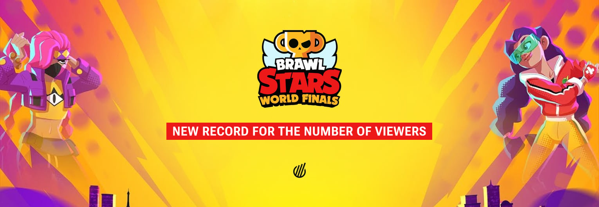

Championships

WorldFinals are an important part of Brawl Stars community.
Players can participate by watching live streams through youtube or the real game.
To begin participating, the player would have to compete in annual competitions and
challenges with a minimal amount of loses to be able to move forward in the process.
Championships are competed within teams as most gamemodes are 3v3s. Cash prizes
can be won as well. ESports is a company that streams these games and events
so players can watch. They also work with Supercell to make the WorldFinals and
other championships such as the MonthlyFinals.
The MonthlyFinals take place every month as a smaller WorldFinals. The reward of cash
is smaller but the event is much more often. Professional teams use these events as
practice for professional matches, to gain fame, or just the money. These can be tickets
for a place somewhere bigger like the World Finals if one wins.